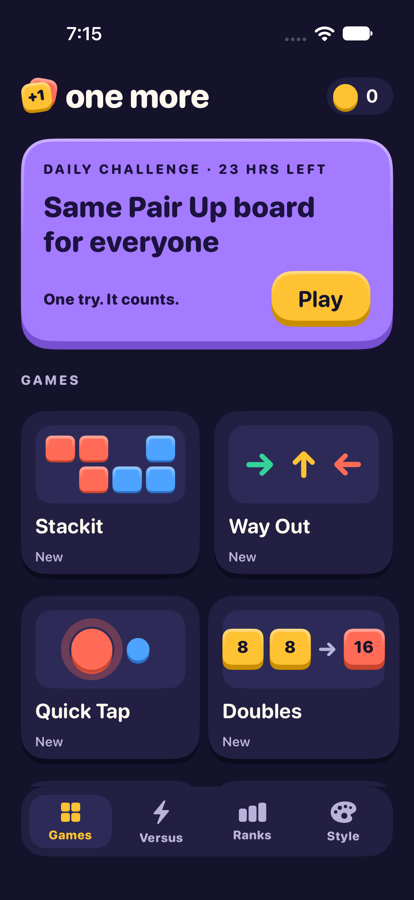
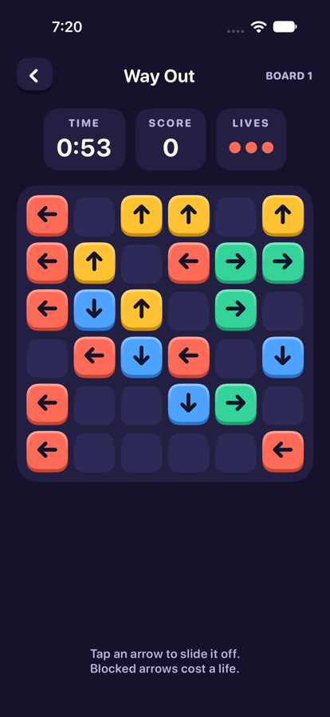
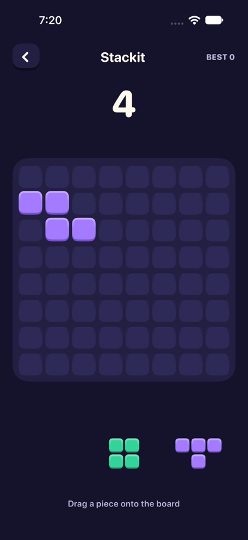
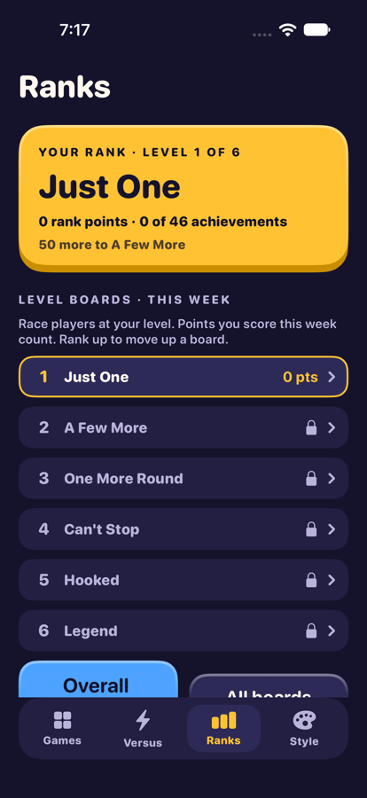
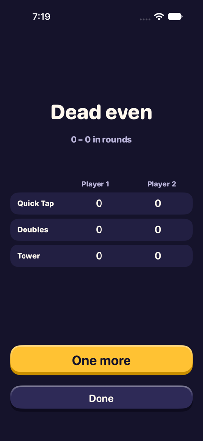
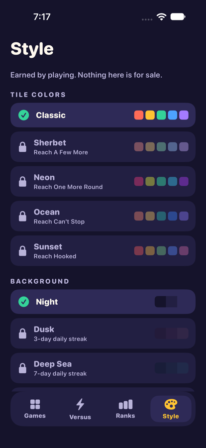

Getting started
One More is twelve short puzzle and tap games. Every round pays points, earns achievements and moves you up the ranks.






- Games tab: tap any game to play a practice round. The tile shows your best.
- Daily challenge: the purple card on top. One board for everyone, one try.
- Versus tab: pick a game, pick a rival, one round each on the same board.
- Ranks tab: your rank, the leaderboards right on the page, and a row into Achievements.
- Style tab: tile colors, backgrounds, win effects and titles you have earned.
- Finished a round? One more starts another right away.
Free plays and One More+
Free: every game, 5 plays an hour. No ads. Ever.
- A play is starting a practice round: a game tile, One more, Practice on the daily card, or Play on Ranks. It is used when the round starts.
- The daily challenge and Versus never use a play.
- Each play comes back one hour after you used it. The Games tab shows plays left and when the next one returns.
- Out of plays? The sheet offers the daily, Versus, or One More+.
- One More+: unlimited plays — $1.99 a month or $9.99 a year. Renews automatically; cancel any time in iPhone Settings.
- Ranks, achievements, leaderboards and earned styles stay free for everyone.
- Settings (gear on the Games tab): your One More+ status, Manage Subscription and Restore Purchases.
The games
Untimed games get a 90-second clock in versus, so a match never stalls.
Stackit
Drag pieces from the tray onto the 8×8 board. Fill a whole row or column to clear it.
- 1 point per square placed.
- Clears pay 10 × lines² × your streak — clear two at once, or keep clearing turn after turn.
- Ends when no piece fits.
Way Out
Tap an arrow and it slides off the board — unless another arrow is in its way.
- 10 points per arrow, 100 per board cleared.
- A blocked arrow costs one of your 3 lives.
- Every board can be cleared.
Quick Tap
Circles pop up one at a time. Tap them before they shrink away.
- Up to 100 points per circle — faster pays more.
- Grape circles with an ✕ are decoys: −50.
- Circles get quicker as the round goes.
Doubles
Swipe to slide every tile. Two of the same number merge into their double.
- Each merge pays the new tile's value.
- Ends when no swipe can move anything.
Triples
Tap a tile nothing is resting on to drop it in the 7-slot tray. Three alike clear.
- 30 points per triple, 200 per board.
- Seven in the tray with no match ends the round.
Swap 3
Swipe a gem into its neighbor to line up three or more of one color.
- 10 points per gem; chains multiply (×2, ×3…).
- A swap that makes no line is undone and costs no move.
Five Letters
Guess the five-letter word in six tries.
- Green: right letter, right spot. Yellow: in the word, wrong spot. Dark: not in the word.
- Solved: 100 points per guess you didn't need + 2 per second left. Not solved: 0.
Tower
A block slides back and forth. Tap anywhere to drop it. What hangs over falls off.
- 10 points per floor.
- Land it dead on for a Perfect: full width kept, +15 per perfect in a row (up to 5).
- Miss the tower and it's over.
One Line
Start on the star and drag one line through every open square, without crossing.
- 100 points per puzzle + 5 per square.
- Drag back to undo. Boards grow every three you solve.
Pair Up
Mahjong-style. Tap two matching free tiles to clear them. Free means nothing on top and open on the left or right.
- 20 points per pair, 300 per board.
- Every board can be cleared. If you run out of pairs it reshuffles for −50.
Pour
Tap a tube, then where to pour. Colors only pour onto the same color or an empty tube.
- 25 points per color in each puzzle you sort.
- More colors as you go. "Start over" resets the puzzle.
Mini Sudoku
Fill the 6×6 grid so 1–6 appear once in every row, column and shaded box.
- 200 points per puzzle. A wrong number is refused and costs 20.
- Every puzzle has exactly one answer.
Daily challenge
- One game a day, in rotation through all twelve.
- Everyone in the world gets the same board.
- One try. After that, the card shows your score and offers a practice round.
- A new challenge starts at midnight UTC — 7 PM Central in summer, 6 PM in winter.
- Daily scores go on their own Game Center board, which resets every day.
- Play days in a row for streak achievements and background unlocks.
Ranks and achievements
Your rank comes from achievements
Every achievement has a tier. Higher tiers are worth more rank points:
| TIER | RANK POINTS |
|---|---|
| Bronze | 10 |
| Silver | 25 |
| Gold | 60 |
| Platinum | 100 |
The six rank levels
| LEVEL | RANK | RANK POINTS |
|---|---|---|
| 1 | Just One | 0 |
| 2 | A Few More | 50 |
| 3 | One More Round | 150 |
| 4 | Can't Stop | 350 |
| 5 | Hooked | 650 |
| 6 | Legend | 1,000 |
Level boards
- Each rank level has its own Game Center leaderboard, so you race players at your level.
- Your score there is the points you earn this week in every game.
- Boards reset every Wednesday at 8 AM Central (13:00 UTC).
- Rank up and your scores go to the next level's board.
- There is also an Overall Rank board (rank points), a Daily board and a board for every game (best round).
- Seeing the boards: on the Ranks tab, tap My level, Overall rank or Daily challenge, or any game under Game boards. The board opens on its own page with the top 25 and your spot highlighted; switch Everyone / Friends at the top. After a round, Board on the result screen opens that game's board.
The 46 achievements
- Every game: Bronze, Silver and Gold for a score in one round (36 in all).
- Daily: Three in a Row (3 days), Week Long (7), Every Single Day (30, Platinum).
- Versus: First Blood (1 win), Rival (10), Nemesis (50, Platinum), Double Up (win with double your rival's score, Gold).
- Explorer: Sampler (play every game), All-Rounder (Silver in every game), Completionist (Gold in every game, Platinum).
Ranks › Achievements lists what you've earned. Locked ones are folded by group — each group shows the one you're closest to; tap to open it.
Versus
- Pick a game on the Versus tab, then pick who you're playing.
- One round each, on the same board. Higher score wins.
- Who you can play: someone you've played before, a Game Center friend (Show my friends), Anyone (Game Center finds a rival), or Same phone — pass it back and forth.
- Online, you play now and they play when they can. Nobody has to be online at the same time.
- Rematch: when a match ends, both players see a rematch button on that match — same game, new board.
- Untimed games (Stackit, Doubles, Swap 3, Tower) get a 90-second clock in versus.
- Versus is always free.
Style and unlocks
Everything here is earned by playing. Nothing is for sale.
| UNLOCK | HOW |
|---|---|
| Tile colors: Sherbet, Neon, Ocean, Sunset | Reach A Few More, One More Round, Can't Stop, Hooked |
| Backgrounds: Dusk, Deep Sea, Aurora | 3-, 7- and 30-day daily streaks |
| Win effects: Stars, Hearts, Crowns | 1 versus win, 10 wins, Double Up |
| Titles | Every rank you reach, plus Daily Devotee, Rival, Nemesis, Crusher, All-Rounder and Completionist from achievements |
Saving and Game Center
- Your bests, points, achievements and rank save on your phone and to your own iCloud. A new phone on the same Apple Account picks them up.
- Style choices are kept per phone.
- World leaderboards, level boards and online versus use Game Center. Sign in under iOS Settings › Game Center.
- Not signed in? Every game, the daily challenge, achievements, unlocks and same-phone versus still work.
Questions
Why can't I replay today's daily?
It's one try so the daily board is fair for everyone. Tap Practice on the card to play that game again for fun.
My score isn't on the leaderboard.
Check you're signed in to Game Center (iPhone Settings › Game Center) — the Ranks tab says "Game Center is off" if you aren't. Scores post when a round ends, and everything you've already earned posts when you sign in.
I got a new phone. Where did my progress go?
Sign in to the same Apple Account with iCloud on. Your progress, achievements and rank come back from iCloud.
I bought One More+ on another phone.
Open Settings (gear on the Games tab) and tap Restore Purchases while signed in to the same Apple Account.
A tile color is locked.
The Style tab says what unlocks it — usually reaching a rank, a daily streak or versus wins.
My rival never played their turn.
Game Center gives each player time to take their turn. The match stays under Your matches on the Versus tab until it's done.
Contact
Email appstoresupportwithasmile@icloud.com — tell us your phone model and which game.